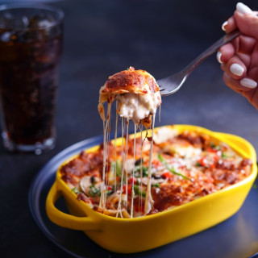

Delizioso Lasagne al forno

Description
Step into a world of Italian culinary excellence with our irresistible lasagna, a timeless classic that promises to tantalize your taste buds with every layer. At the heart of this culinary masterpiece lies a rich and flavorful ragù sauce, simmered to perfection with a medley of aromatic herbs, tender ground beef, and tangy tomatoes, creating a symphony of savory goodness.
Layer upon layer of delicate lasagna noodles, cooked to al dente perfection, intertwine with velvety béchamel sauce, adding a creamy richness that blankets each bite in luxurious indulgence. Between each layer, a generous scattering of creamy ricotta cheese awaits, lending a luscious texture and a hint of subtle sweetness to the ensemble.
Ingredients
Take out your pen and paper or your favorite notetaking App and jot this down. You'll need:
 |
- Ground beef
- Ricotta cheese
- Mozzarella cheese
- Parmesan cheese
- Fresh spinach leaves
- Mushrooms
- Garlic
- Onion
- Tomato (for sauce)
- Fresh herbs (such as basil, oregano, or parsley)
- Lasagna noodles
- Olive oil
- Tomato sauce or canned tomatoes
- All-purpose flour (for béchamel sauce)
- Butter (for béchamel sauce)
- Milk (for béchamel sauce)
- Dried herbs and spices (such as salt, pepper, Italian seasoning)
- Red wine (optional, for deglazing and flavoring the sauce)
- Crushed red pepper flakes (optional, for added heat)
- Breadcrumbs (optional, for topping)
|
How To
- Preheat the oven to 375°F (190°C).
- Prepare the ragù sauce:
- Heat olive oil in a large skillet over medium heat.
- Add chopped onions and minced garlic, sauté until softened.
- Add ground beef and cook until browned, breaking it up with a spatula.
- Stir in diced tomatoes or tomato sauce, along with red wine if using.
- Season with salt, pepper, and dried herbs (such as basil and oregano).
- Simmer the sauce for 20-30 minutes, stirring occasionally, until thickened.
- Prepare the béchamel sauce:
- Melt butter in a saucepan over medium heat.
- Whisk in all-purpose flour until smooth to create a roux.
- Gradually whisk in milk until the sauce thickens and coats the back of a spoon.
- Season with salt, pepper, and a pinch of nutmeg if desired.
- Remove from heat and set aside.
- Cook the lasagna noodles according to package instructions until al dente.
- Assemble the lasagna:
- Spread a thin layer of ragù sauce on the bottom of a baking dish.
- Arrange a layer of cooked lasagna noodles on top of the sauce.
- Spread a layer of ricotta cheese over the noodles, followed by a layer of spinach and mushrooms.
- Pour a layer of béchamel sauce over the vegetables.
- Sprinkle with shredded mozzarella and grated Parmesan cheese.
- Repeat the layers until all ingredients are used, ending with a layer of sauce and cheese on top.
- Cover the baking dish with foil and bake in the preheated oven for 30-40 minutes.
- Remove the foil and bake for an additional 10-15 minutes, or until the cheese is bubbly and golden brown.
- Let the lasagna cool for a few minutes before serving. Garnish with fresh basil or parsley if desired.
- Enjoy your delicious homemade lasagna!
See also